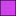

<!doctype html>
<html lang="en">
    <head>
        <meta charset="utf-8">
        <meta http-equiv="X-UA-Compatible" content="IE=edge">
        <meta name="viewport" content="initial-scale=1,user-scalable=no,maximum-scale=1,width=device-width">
        <meta name="mobile-web-app-capable" content="yes">
        <meta name="apple-mobile-web-app-capable" content="yes">
        <link rel="stylesheet" href="css/leaflet.css">
        <link rel="stylesheet" href="css/qgis2web.css">
        <style>
        html, body, #map {
            width: 100%;
            height: 100%;
            padding: 0;
            margin: 0;
        }
        </style>
        <title></title>
    </head>
    <body>
        <div id="map">
        </div>
        <script src="js/qgis2web_expressions.js"></script>
        <script src="js/leaflet.js"></script>
        <script src="js/leaflet.rotatedMarker.js"></script>
        <script src="js/leaflet.pattern.js"></script>
        <script src="js/leaflet-hash.js"></script>
        <script src="js/Autolinker.min.js"></script>
        <script src="js/rbush.min.js"></script>
        <script src="js/labelgun.min.js"></script>
        <script src="js/labels.js"></script>
        <script src="data/LuasPanenhaKetimun_0.js"></script>
        <script>
        var map = L.map('map', {
            zoomControl:true, maxZoom:28, minZoom:1
        })
        var hash = new L.Hash(map);
        map.attributionControl.addAttribution('<a href="https://github.com/tomchadwin/qgis2web" target="_blank">qgis2web</a>');
        var bounds_group = new L.featureGroup([]);
        var basemap0 = L.tileLayer('http://{s}.tile.openstreetmap.org/{z}/{x}/{y}.png', {
            attribution: '&copy; <a href="http://openstreetmap.org">OpenStreetMap</a> contributors,<a href="http://creativecommons.org/licenses/by-sa/2.0/">CC-BY-SA</a>',
            maxZoom: 28
        });
        basemap0.addTo(map);
        function setBounds() {
            if (bounds_group.getLayers().length) {
                map.fitBounds(bounds_group.getBounds());
            }
        }
        function pop_LuasPanenhaKetimun_0(feature, layer) {
            var popupContent = '<table>\
                    <tr>\
                        <td colspan="2"><strong>Kecamatan</strong><br />' + (feature.properties['Kecamatan'] !== null ? Autolinker.link(String(feature.properties['Kecamatan'])) : '') + '</td>\
                    </tr>\
                    <tr>\
                        <th scope="row">Ketimun</th>\
                        <td>' + (feature.properties['Ketimun'] !== null ? Autolinker.link(String(feature.properties['Ketimun'])) : '') + '</td>\
                    </tr>\
                </table>';
            layer.bindPopup(popupContent, {maxHeight: 400});
        }

        function style_LuasPanenhaKetimun_0_0(feature) {
            if (feature.properties['Ketimun'] >= 0.000000 && feature.properties['Ketimun'] <= 43.000000 ) {
                return {
                pane: 'pane_LuasPanenhaKetimun_0',
                opacity: 1,
                color: 'rgba(0,0,0,1.0)',
                dashArray: '',
                lineCap: 'butt',
                lineJoin: 'miter',
                weight: 1.0, 
                fill: true,
                fillOpacity: 1,
                fillColor: 'rgba(133,219,152,1.0)',
            }
            }
            if (feature.properties['Ketimun'] >= 43.000000 && feature.properties['Ketimun'] <= 86.000000 ) {
                return {
                pane: 'pane_LuasPanenhaKetimun_0',
                opacity: 1,
                color: 'rgba(0,0,0,1.0)',
                dashArray: '',
                lineCap: 'butt',
                lineJoin: 'miter',
                weight: 1.0, 
                fill: true,
                fillOpacity: 1,
                fillColor: 'rgba(117,158,47,1.0)',
            }
            }
            if (feature.properties['Ketimun'] >= 86.000000 && feature.properties['Ketimun'] <= 129.000000 ) {
                return {
                pane: 'pane_LuasPanenhaKetimun_0',
                opacity: 1,
                color: 'rgba(0,0,0,1.0)',
                dashArray: '',
                lineCap: 'butt',
                lineJoin: 'miter',
                weight: 1.0, 
                fill: true,
                fillOpacity: 1,
                fillColor: 'rgba(209,66,237,1.0)',
            }
            }
        }
        map.createPane('pane_LuasPanenhaKetimun_0');
        map.getPane('pane_LuasPanenhaKetimun_0').style.zIndex = 400;
        map.getPane('pane_LuasPanenhaKetimun_0').style['mix-blend-mode'] = 'normal';
        var layer_LuasPanenhaKetimun_0 = new L.geoJson(json_LuasPanenhaKetimun_0, {
            attribution: '<a href=""></a>',
            pane: 'pane_LuasPanenhaKetimun_0',
            onEachFeature: pop_LuasPanenhaKetimun_0,
            style: style_LuasPanenhaKetimun_0_0,
        });
        bounds_group.addLayer(layer_LuasPanenhaKetimun_0);
        map.addLayer(layer_LuasPanenhaKetimun_0);
        var baseMaps = {};
        L.control.layers(baseMaps,{'Luas Panen [ha] Ketimun<br /><table><tr><td style="text-align: center;"></td><td>Sedikit</td></tr><tr><td style="text-align: center;"></td><td>Sedang</td></tr><tr><td style="text-align: center;"></td><td>Banyak</td></tr></table>': layer_LuasPanenhaKetimun_0,},{collapsed:false}).addTo(map);
        setBounds();
        </script>
    </body>
</html>
